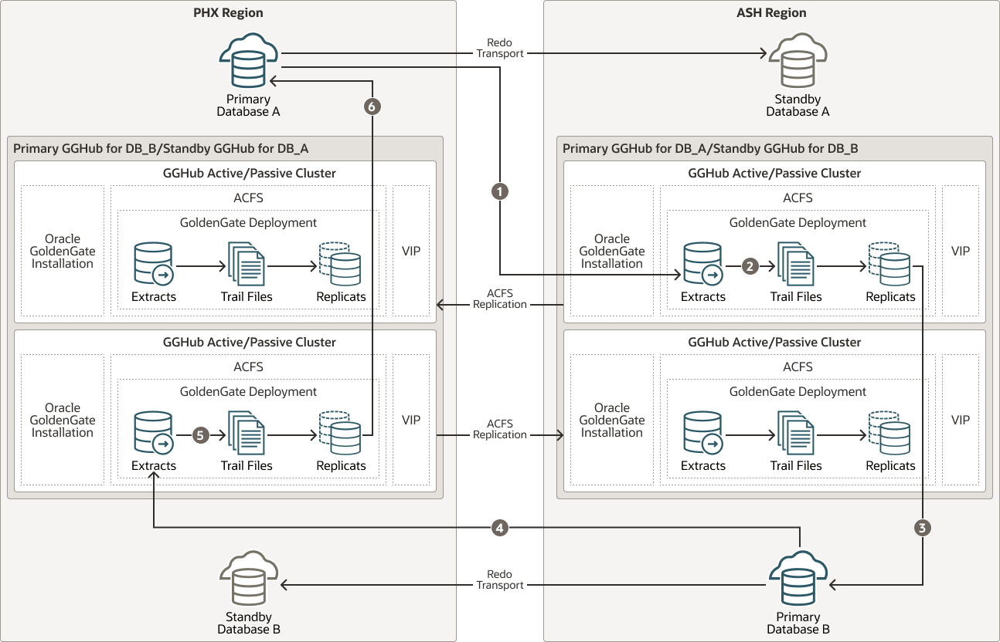

Planning GGHub Placement in the Platinum MAA Architecture
Extreme availability that delivers zero downtime (RTO=0 or near zero) and zero or near zero data loss (RPO=0 or near zero) typically requires the following Platinum MAA architecture.
-
You have the source and target database in an Oracle GoldenGate architecture to allow your application to fail over immediately in the case of disaster (database, cluster, or site failure) or switch over in the case of a database or application upgrade. This architecture enables the potential RTO of zero or near zero for disaster scenarios and database and application upgrade maintenance.
-
Each source and target database is deployed in Exadata cloud systems so any local failures are tolerated or recovered almost instantly.
-
Each source and target database is configured with a standby database with Data Guard Fast-Start Failover so any failure of the database results in activating a new primary database in seconds to minutes. If SYNC transport is leveraged with Max Availability protection mode, zero data loss Data Guard failover is achieved.
-
Configured with GoldenGate replication using MAA GGhub between the source and target databases.
-
Configured so that any standby becoming a primary database due to Data Guard switchover or failover will automatically resynchronize with its target GoldenGate database. If zero data loss Data Guard switchover or failover occurs, GoldenGate resychronization ensures zero data loss across the distributed database environment.
-
Configured with GoldenGate Automatic Conflict Detection and Resolution, which is required after any Data Guard failover operation occurs.
Where to Place the MAA Primary GGHub and Standby GGHub
-
The GGHub pair (Primary and Standby GGHub) must reside in the same OCI regions as each primary and standby database. For example:
-
If the primary database is in AD1, Region A, and the standby database is in AD2, Region A, then the GGHub pair will reside in Region A. For this configuration, see Cloud Within Region: Configuring Oracle GoldenGate Hub for MAA Platinum.
-
If the primary database is in Region A and the standby database is in Region B, then the GGHub pair will split between Region A and B. The primary, or active, GGHub must be co-located in the same OCI region as the target primary database. For this configuration, continue reading the topics in this chapter.
-
-
Performance implications:
-
Primary or active GGHub must reside in the same data center as the target database to ensure round trip latency of 4ms or less. (Replicat performance)
-
Primary or active GGHub should be < 90 ms from the source database without incurring GoldenGate performance degradation. (Extract performance)
-
-
GoldenGate distribution path:
-
A GoldenGate distribution path is required if the source and target GGHubs are in different regions and latency between the OCI regions is > 90 ms.
-
In Oracle Cloud, when your Oracle GoldenGate source and target databases reside in the same region, or in different regions in the same country, you never need to set up a GoldenGate distribution path because the latency is always < 90 ms.
-
MAA GGHubs Placed in Different OCI Regions
In this scenario, the primary database and its standby database are located in different OCI regions, so the primary (active) GGHub is located in the same region as the primary database, and the standby GGHub is located in the same region as the standby database.
The following architectural components comprise the GGHubs, as shown in the image below:
-
The primary database and associated standby database are configured with Oracle Active Data Guard Fast Start Failover (FSFO). FSFO can be configured with any Data Guard protection mode, with ASYNC or SYNC redo transport, depending on your maximum data loss tolerance.
-
Primary GGHub Active/Passive Cluster: In this configuration, there’s a 2-node cluster with two Oracle GoldenGate software configurations. Because the primary GGHub needs to be <= 4 ms from the target database, and the two regions (PHX and ASH) network latency > 5 ms, two GGHub configurations are created for each GGHub cluster. Essentially, a primary GGHub configuration will always be in the same region as the target database.
GGHub is configured with the Oracle GoldenGate 21c software deployment that can support Oracle Database 11g and later releases. This GGHub can support many primary databases and encapsulates the GoldenGate processes. Extract mines transactions from the source database, and Replicat applies those changes to the target database. GoldenGate trail and checkpoint files also reside in the ACFS file system.
An HA failover solution is built in to the GGHub cluster, which includes automatic failover and restart of GoldenGate processes and activity after a node failure.
Each GGHub configuration contains a GoldenGate service manager and deployment, ACFS file system with ACFS replication, and separate application VIP.
-
Standby GGHub Active/Passive Cluster: A symmetric standby GGHub is configured. ACFS replication is set up between the primary and standby GGHubs to preserve all GoldenGate files.
Manual GGHub failover, which includes ACFS failover, can be performed if you lose the entire primary GGHub.
Figure 22-1 Primary and Standby GGHubs in Different OCI Regions

The figure above depicts replicating data from Primary Database A to Primary Database B, and Primary B back to Primary A with the following steps:
- Primary Database A: Primary A’s Logminer server sends redo changes to an ASH region GGHub Extract process, which is on the Primary GGHub for Database A.
- Primary GGHub: The Extract process writes changes to trail files.
- Primary GGHub to Primary Database B: An ASH region GoldenGate Replicat process applies those changes to the target database (Primary B).
- Primary Database B: Primary B’s Logminer server sends redo to a PHX region GGHub Extract process, which is on the Primary GGHub for Database B.
- Primary GGHub: The Extract process writes changes to trail files.
- Primary GGHub to Primary Database A: A PHX region GoldenGate Replicat process applies those changes to the target database (Primary A).
Table 22-1 Outage Scenarios, Repair, and Restoring Redundancy for GGHubs in Different OCI Regions
| Outage Scenario | Application Availability and Repair | Restoring Redundancy and Pristine State |
|---|---|---|
| Primary Database A (or Database B) failure |
Impact: Near-zero application downtime. GoldenGate replication resumes when the new primary database starts.
|
|
| Primary or standby GGHub single node failure |
Impact: No application impact. GoldenGate replication resumes automatically after a couple of minutes. No action is required. An HA failover solution is built in to the GGHub that includes automatic failover and restart of GoldenGate processes and activity. Replication activity is blocked until GoldenGate processes are active again. GoldenGate Replication blackout could last a couple of minutes. |
Once the node restarts, active/passive configuration is re-established. |
| Primary GGHub cluster crashes and is not recoverable |
Impact: No application impact. GoldenGate replication resumes after the existing primary GGHub restarts or manual GGHub failover completes.
|
|
| Standby GGHub cluster crashes and is not recoverable |
Impact: No application or replication impact.
|
N/A |
| Complete Regional failure |
Impact: Near Zero Application Downtime. GoldenGate replication resumes when the new primary database starts.
|
|